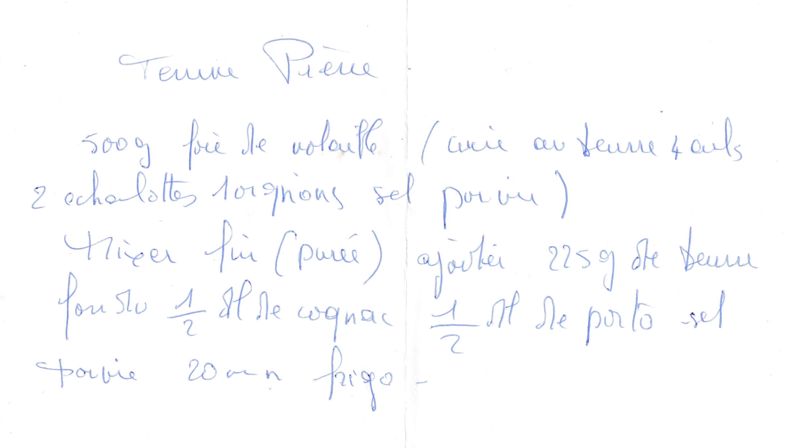

Terrine
Pierre

PREPARATION
500gr de foie de volaille
(Cuire au beurre 4 oeufs 2 échalottes 1 oignon sel poivre)
mixer fin( purée)
Ajouter 225gr de beurre fondu 1/2 dl de cognac 1/2 dl de porto sel poivre
20min au frigo